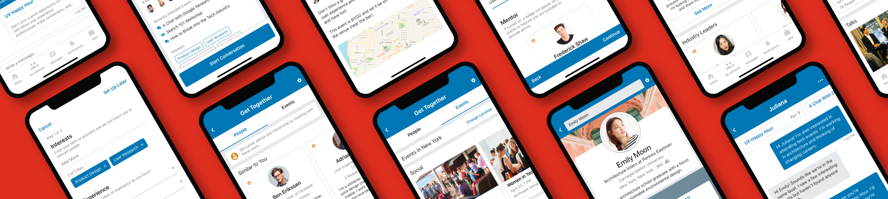

Get Together
Overview
Get Together leverages LinkedIn’s existing product to create a new way for professionals to network, by transforming online connections into real-life relationships. This is a conceptual project that I completed as part of a team at Pratt.
Opportunity
Using LinkedIn to connect online is the simplest and quickest way to network, but frequently those relationships remain superficial. How might we create a LinkedIn feature to help users expand their networks in a meaningful way?
Tasks
- Research
- Ideation
- Wireframing
- Prototyping
- Copywriting
- User Testing
- Visual Design
Platform
iOS
tl;dr
Solution
Get Together helps professionals discover and connect with new people rather than with people they already know. We accomplish this in two steps:
By promoting an actionable activity after connecting online, the user will be better able to find a companion to attend the event with and help them to feel less overwhelmed about "real-life networking".
Entry Point
Adhering to LinkedIn’s design system, we housed this feature inside the Dashboard. By making it an opt-in feature, users who choose to use it will enter with the intention of meeting new people which should discourage empty connections.

Preferences
When accessed for the first time, the user is asked to fill out their preferences. Designing the Interests section was challenging because we wanted to communicate to the user that the solution is not just asking for the traits that they have but also for the traits of the people they want to meet.
Mentoring
If the user has two or more years of experience, the mentor option is enabled and turning it on adds a badge to their profile. This indicator lets novice professionals see who is available to provide advice and allows experienced professionals the opportunity to show that they are willing to help.


Preferences
Discover People is the core component of Get Together. In this hub, the user can discover relevant people to start building a relationship with. Based on the preferences the user set earlier during the onboarding, people most similar to the user are prioritized in the display.
The profile contains information specific to Get Together and this is where the solution starts promoting events as a way to meet in real life. Event suggestions are based on mutual interests and if the other user indicated they were interested in attending, that event will be prioritized higher.
Chat
By displaying event suggestions in the chat, it keeps events in the forefront of the user’s mind and provides the user with a convenient way to view more details about the event or share it with the other person.


Discover Events
Complementing Discover People is Discover Events. In this Events hub, the user can find events relevant to their interests first and then find a companion to attend with if they are anxious about going alone. The solution encourages discovering the right people by prominently displaying people who have responded “Interested” and also prioritizing people most similar to the user.
The Process
Research
In order to empathize with the people my team and I were designing for, we conducted user interviews with young professionals and asked them questions to understand the following:
- Why and how do they currently network?
- What do they think of networking? If they do it, how? If they don’t, why?
- Whether they are meeting people in real life from social media or networking apps
After we organized important observations, findings, and quotes into an affinity diagram, we were able to glean the following insights:
Insight #1
Not just what you know but who you know
These days, users understand the need to build relationships with relevant people to get ahead but social media and networking events have their limitations.
Insight #2
Online relationships are empty
Although “connecting” with other people has been made easy by the internet, meeting in person is still considered more meaningful in creating a relationship. So unless both parties are willing to meet in real life, all these effortless online connections remain superficial.
Insight #3
Real life is intimidating
Since events happen in person, attendees are able to network in a meaningful way, however, they first have to overcome many barriers. Our users expressed reservations about “real-life networking” and would forego attending events unless they have a companion to go with.
Competitive Analysis
To build a better solution, we looked at the pros and cons of LinkedIn’s current product, as well as the product of another direct and indirect competitor— Shapr and Meetup. We focused on how people use these tools to expand their current network and whether it’s done online or in person.
Strength
LinkedIn is already the most popular company when it comes to professional networking so any new feature would be an extension of its existing product and won’t require extensive user acquisition and orientation.
Weakness
There’s no way to meet new people. Users can search for people but building a relationship requires both parties to be interested in forging a relationship.
Strength
Users who join Shapr are going in with the intention of meeting people so the likelihood of a response and meeting in person are much higher.
Weakness
This model of networking mirrors dating apps. Employing the same user flow of swiping, matching, and chatting makes the experience feel unprofessional and blurs the line between personal and professional.
Strength
Events are better for engaging in meaningful interactions and Meetup helps users meet other people based on similar interests.
Weakness
Meetup is just a facilitation tool and lacks a robust social platform. Before attending an event, users can interact with one another but with limitations and after attending, users can’t connect without using an entirely different tool.
User Personas
Emily, 24, Architecture Intern
Needs
Emily is interested in breaking into the tech industry. She wants to learn more about the different roles available, get advice on next steps to take, and meet someone in the same boat.
Pain Points
She has tried searching for and reaching out to people online but responses have been limited. She has also come across a few interesting events but is anxious about going alone.

Fred, 28, Product Designer
Needs
Frederick just moved to a new city and is looking to meet more people working in his industry. He also wants to improve his leadership skills by helping younger designers with their careers.
Pain Points
He could use LinkedIn to search for people but that requires a lot of effort and wants something easier. He also doesn’t have any way to convey his willingness to help others.
Paper Prototyping & Wireframing
To figure out the features of Get Together, we first completed a few rapid sketching exercises to quickly get our thoughts on paper. After distilling common themes throughout our sketches, we started wireframing to visualize the key elements and performing usability tests to test and confirm our designs.
Next Steps
Atttending events is a significant part of networking and our solution, so in our next step we would build a tool so users can create the events. In this way, there would be enough events covering different interests. We also want users to be able to strengthen their relationships after attending an event. By integrating the existing groups feature in LinkedIn, multiple users can communicate and get updates about events that they can all attend together.
Final Thoughts
Through designing Get Together, my team and I learned how willing people are to connect with others but how reluctant they are to meet in person. Our goal with this concept was to help facilitate meaningful interactions by taking their online relationship into the real world. LinkedIn already has half of the solution—helping users connect with people they already know. However, they haven’t solved for the other half, which is helping users discover new people worth meeting.